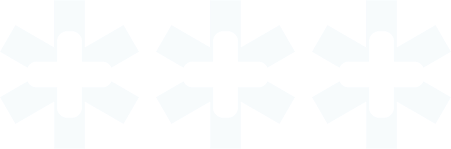

Copago conocido
Sabes exactamente cuánto pagarás antes de realizarte el procedimiento. Sin sorpresas.
Conoce los procedimientos con copago previamente informado: accede a información clara sobre cobertura, prestadores en convenio y condiciones de atención.
Buscar mi PADINFORMACIÓN GENERAL
El Pago Asociado a Diagnóstico (PAD) es una modalidad de atención que agrupa todas las prestaciones necesarias para resolver un diagnóstico o tratamiento específico, permitiéndote conocer previamente el copago asociado antes de atenderte.
Copago conocido
Sabes exactamente cuánto pagarás antes de realizarte el procedimiento. Sin sorpresas.
Prestadores en convenio
Elige entre los centros médicos afiliados que cuentan con acuerdo para cada PAD.
Proceso simplificado
Una sola autorización cubre todos los elementos del diagnóstico: cirugía, anestesia y hospitalización.

BUSCADOR
Procedimiento / Especialidad / Cobertura
5 resultados
Angioplastía Coronaria
Prestadores en convenio
CONDICIONES DE ACCESO
Diagnóstico confirmado por angiografía coronaria. Se requiere evaluación cardiológica completa previa al procedimiento.
Incluye hospitalización de hasta 3 días y anestesia general.
Bypass Coronario
Prestadores en convenio
CONDICIONES DE ACCESO
Cardiopatía coronaria severa con indicación quirúrgica confirmada por cardiólogo. Exámenes preoperatorios completos requeridos.
Incluye hospitalización de hasta 7 días, anestesia general y cuidados intensivos.
Colecistectomía Laparoscópica
Prestadores en convenio
CONDICIONES DE ACCESO
Diagnóstico confirmado por ecografía abdominal con informe médico. Se requiere evaluación prequirúrgica completa.
Incluye hospitalización de hasta 2 días y anestesia general.
Cirugía de Catarata
Prestadores en convenio
CONDICIONES DE ACCESO
Diagnóstico de catarata confirmado por oftalmólogo con agudeza visual reducida. Biometría ocular preoperatoria obligatoria.
Incluye implante de lente intraocular estándar y control postoperatorio.
Artroplastía de Rodilla
Prestadores en convenio
CONDICIONES DE ACCESO
Gonartrosis severa grado III o IV confirmada por radiografía. Indicación quirúrgica de traumatólogo especialista.
Incluye hospitalización de hasta 5 días, prótesis estándar y kinesioterapia postoperatoria.
Prestador / Dirección / Especialidades
4 resultados
Clínica Alemana de Santiago
PADs disponibles en este prestador
Angioplastía Coronaria
Bypass Coronario
Colecistectomía Laparoscópica
Cirugía de Catarata
Artroplastía de Rodilla
Clínica Las Condes
PADs disponibles en este prestador
Angioplastía Coronaria
Bypass Coronario
Cirugía de Catarata
Artroplastía de Rodilla
Hospital del Trabajador
PADs disponibles en este prestador
Bypass Coronario
Artroplastía de Rodilla
Megasalud Maipú
PADs disponibles en este prestador
Colecistectomía Laparoscópica
Cirugía de Catarata
Histerectomía
REGLAMENTO
Antes de solicitar una autorización PAD, revisa los requisitos generales, documentación necesaria y proceso de tramitación.
Normativa vigente
Circular IF N°518 de la Superintendencia de Salud, vigente desde el 1 de julio de 2026.
Nuestros ejecutivos pueden ayudarte a encontrar el PAD adecuado